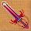
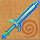
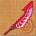
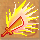
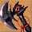
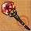
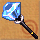
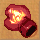
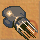
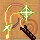

圖示產品名重量等級需求工作經驗商店售價需要原料
 嗜血之劍1701404911005泰坦金屬 3 約書亞晶石 1 櫸木 3
王者之劍1801505311989菲洛爾金屬 3 血卵石 1 櫸木 3
 辟邪斬妖劍1901605612423菲洛爾金屬 3 康士坦晶石 1 魔紋杉 3
 血光之刀1701404912336泰坦金屬 4 約書亞晶石 1 櫸木 2
 帝王神刃1801505312461泰坦金屬 4 血卵石 1 櫸木 2
邪靈妖刀1901605613940菲洛爾金屬 4 康士坦晶石 1 魔紋杉 2
嗜血之斧2101404911066菲洛爾金屬 3 約書亞晶石 1 櫸木 2
帝王神斧2201505311191菲洛爾金屬 3 血卵石 1 櫸木 2
 屠妖戰神斧2301605611525菲洛爾金屬 3 康士坦晶石 1 魔紋杉 2
 血石魔杖601404914995櫸木 8 泰坦金屬 3 約書亞晶石 1
魔導士法杖601505315120櫸木 8 泰坦金屬 3 血卵石 1
 王者權杖601605616056魔紋杉 8 泰坦金屬 3 康士坦晶石 1
 血焰之拳70140498392蜥蜴的尾巴 4 錦絹 1 約書亞晶石 1
帝王拳套70150538517蜥蜴的尾巴 4 錦絹 1 血卵石 1
 戰神拳套70160569414蟑螂的腳 3 精靈綢緞 1 康士坦晶石 1
 轉生皮鞭50140 | | | | | | | | | | | | | | | | | | | | | | | | | | | | | | | | | | | | | | | | | | | | | | | | | | | | | | | | | | | | | | | | | | | | | | | | | | | | | | | | | | | | | | | | | | | | | | | | | | | | | | | | | | | | | | | | | | | | |